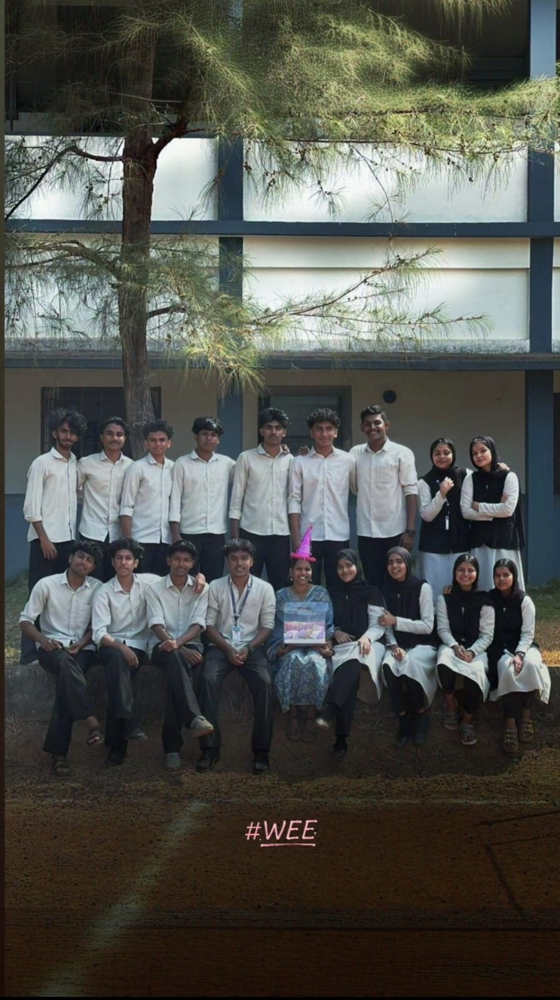

Memory · Faculty · Gratitude
First Hope.
A thank-you note from the Computer Science batch.
CS2025–2029MEMORY
← Go to Home
To Our Dear
★ Special Tribute
To Our Dear
Rekha Miss.
Rekha Miss was one of our faculties in the first year. But more than that, she was one of us—always by our side, making us who we are today. She is the reason Computer Science is known as one of the most successful batches of GVC 2025–2029.
We were her first-ever batch in her teaching journey, and we believe she will never forget every moment spent with us.
"Unfortunately, she left GVC to achieve her dream post. Wherever she goes, we pray she achieves her greatest dreams."
All The Best, Dear Rekha Miss
— Computer Science Batch
